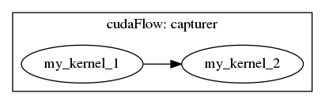
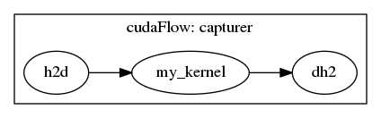
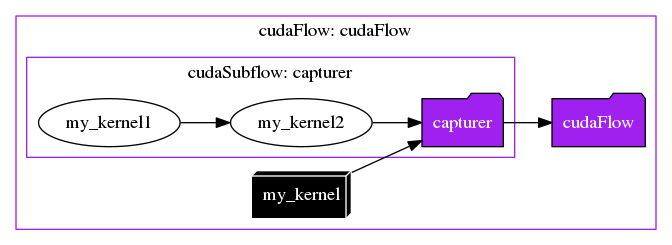

You can create a cudaFlow through stream capture, which allows you to implicitly capture a CUDA graph using stream-based interface. Compared to explicit CUDA Graph construction (tf::cudaFlow), implicit CUDA Graph capturing (tf::cudaFlowCapturer) is more flexible in building GPU task graphs.
Include the Header
You need to include the header file, taskflow/cuda/cudaflow.hpp, for creating a tf::cudaFlowCapturer task.
Capture a cudaFlow
When your program has no access to direct kernel calls but invoke it through a stream-based interface (e.g., cuBLAS and cuDNN library functions), you can use tf::cudaFlowCapturer to capture the hidden GPU operations into a CUDA graph. A cudaFlowCapturer is similar to a cudaFlow except it constructs a GPU task graph through stream capture. You use the method tf::cudaFlowCapturer::on to capture a sequence of asynchronous GPU operations through the given stream. The following example creates a CUDA graph that captures two kernel tasks, task_1 (my_kernel_1) and task_2 (my_kernel_2) , where task_1 runs before task_2.
int main() {
my_kernel_1<<<grid_1, block_1, shm_size_1, stream>>>(my_parameters_1);
}).name("my_kernel_1");
my_kernel_2<<<grid_2, block_2, shm_size_2, stream>>>(my_parameters_2);
}).name("my_kernel_2");
}).name("capturer");
executor.
run(taskflow).wait();
return 0;
}
class to create an executor for running a taskflow graph
Definition executor.hpp:50
tf::Future< void > run(Taskflow &taskflow)
runs a taskflow once
Definition executor.hpp:1573
Task emplace(C &&callable)
creates a static task
Definition flow_builder.hpp:742
class to create a task handle over a node in a taskflow graph
Definition task.hpp:187
class to create a taskflow object
Definition core/taskflow.hpp:73
void dump(std::ostream &ostream) const
dumps the taskflow to a DOT format through a std::ostream target
Definition core/taskflow.hpp:363
class to create a cudaFlow graph using stream capture
Definition cuda_capturer.hpp:57
cudaTask on(C &&callable)
captures a sequential CUDA operations from the given callable
Definition cuda_capturer.hpp:1105
class to create a task handle over an internal node of a cudaFlow graph
Definition cuda_task.hpp:65
cudaTask & precede(Ts &&... tasks)
adds precedence links from this to other tasks
Definition cuda_task.hpp:182

- Warning
- Inside tf::cudaFlowCapturer::on, you should NOT modify the properties of the stream argument but only use it to capture asynchronous GPU operations (e.g.,
kernel, cudaMemcpyAsync).
Common Capture Methods
cudaFlowCapturer defines a set of methods for capturing common GPU operations, such as tf::cudaFlowCapturer::kernel, tf::cudaFlowCapturer::memcpy, tf::cudaFlowCapturer::memset, and so on. For example, the following code snippet uses these pre-defined methods to construct a GPU task graph of one host-to-device copy, kernel, and one device-to-host copy, in this order of their dependencies.
my_kernel<<<grid, block, shm_size, stream>>>(gpu_data, arg1, arg2, ...);
}).name("my_kernel");
}).name("capturer");
cudaTask memcpy(void *dst, const void *src, size_t count)
copies data between host and device asynchronously through a stream
Definition cuda_capturer.hpp:1123
cudaTask & name(const std::string &name)
assigns a name to the task
Definition cuda_task.hpp:200

Create a Capturer on a Specific GPU
You can capture a cudaFlow on a specific GPU by calling tf::Taskflow::emplace_on. By default, a cudaFlow runs on the current GPU associated with the caller, which is typically 0. You can emplace a cudaFlowCapturer on a specific GPU. The following example creates a capturer on GPU 2. When the executor runs the callable, it switches to GPU 2 and scopes the callable under this GPU context.
}, 2);
Task emplace_on(C &&callable, D &&device)
creates a cudaFlow task on the given device
Definition cudaflow.hpp:1666
- Attention
- It is your responsibility to allocate the GPU memory in the same GPU context as the capturer.
Create a Capturer within a cudaFlow
Within a parent cudaFlow, you can capture a cudaFlow to form a subflow that eventually becomes a child node in the underlying CUDA task graph. The following example defines a captured flow task2 of two dependent tasks, task2_1 and task2_2, and task2 runs after task1.
my_kernel2<<<grid1, block1, shm_size1, stream>>>(args1...);
}).name("my_kernel1");
my_kernel2<<<grid2, block2, shm_size2, stream>>>(args2...);
}).name("my_kernel2");
}).name("capturer");
}).name("cudaFlow");
class to create a cudaFlow task dependency graph
Definition cudaflow.hpp:56
cudaTask capture(C &&callable)
constructs a subflow graph through tf::cudaFlowCapturer
Definition cudaflow.hpp:1582
cudaTask kernel(dim3 g, dim3 b, size_t s, F f, ArgsT &&... args)
creates a kernel task
Definition cudaflow.hpp:1272

Offload a cudaFlow Capturer
By default, the executor offloads and executes the cudaFlow capturer once. When you offload a cudaFlow capturer, the Taskflow runtime transforms the user-described graph into an executable graph that is optimized for maximum stream concurrency. Depending on the optimization algorithm, the user-described graph may be different from the actual executable graph submitted to the CUDA runtime. Similar to tf::Executor, tf::cudaFlowCapturer provides several offload methods to run the GPU task graph:
cf.
offload_until([repeat=5] ()
mutable {
return repeat-- == 0; })
});
void offload_n(size_t n)
offloads the captured cudaFlow and executes it by the given times
Definition cuda_capturer.hpp:1237
void offload()
offloads the captured cudaFlow and executes it once
Definition cuda_capturer.hpp:1242
void offload_until(P &&predicate)
offloads the captured cudaFlow onto a GPU and repeatedly runs it until the predicate becomes true
Definition cuda_capturer.hpp:1173
After you offload a cudaFlow capturer, it is considered executed, and the executor will not run an offloaded cudaFlow after leaving the cudaFlow capturer task callable. On the other hand, if a cudaFlow capturer is not offloaded, the executor runs it once. For example, the following two versions represent the same execution logic.
});
});
cudaTask single_task(C c)
capturers a kernel to runs the given callable with only one thread
Definition for_each.hpp:259
Update a cudaFlow Capturer
Between successive offloads (i.e., executions of a cudaFlow capturer), you can update the captured task with a different set of parameters. For example, you can update a kernel task to a memory task from an offloaded cudaFlow capturer.
cf.
kernel(task, grid2, block2, shm2, kernel2, kernel2_args);
cf.
memset(task, target, 0, num_bytes);
};
cudaTask memset(void *ptr, int v, size_t n)
initializes or sets GPU memory to the given value byte by byte
Definition cuda_capturer.hpp:1146
cudaTask kernel(dim3 g, dim3 b, size_t s, F f, ArgsT &&... args)
captures a kernel
Definition cuda_capturer.hpp:1156
When you offload a updated cudaFlow capturer, the runtime will try to update the underlying executable with the new captured graph first, or destroy the executable graph and replace it with a new one. Each method of task creation in tf::cudaFlowCapturer has an overload of updating the parameters of the task created from the same creation method.
- Note
- Unlike tf::cudaFlow that is restrictive about the use of update methods, it is valid to alter the topology and change the type of a captured task between successive execution of a cudaFlow capturer.
Use cudaFlow Capturer in a Standalone Environment
You can use tf::cudaFlowCapturer in a standalone environment without going through tf::Taskflow and offloads it to a GPU from the caller thread. All the features we have discussed so far apply to the standalone use.
cudaTask copy(T *tgt, const T *src, size_t num)
captures a copy task of typed data
Definition cuda_capturer.hpp:1136
cudaTask & succeed(Ts &&... tasks)
adds precedence links from other tasks to this
Definition cuda_task.hpp:189
When using cudaFlow Capturer in a standalone environment, it is your choice to decide its GPU context. The following example creates a cudaFlow capturer and executes it on GPU 2.
class to create an RAII-styled context switch
Definition cuda_device.hpp:293
- Note
- In the standalone mode, a written cudaFlow capturer will not be executed until you explicitly call an offload method, as there is neither a taskflow nor an executor.